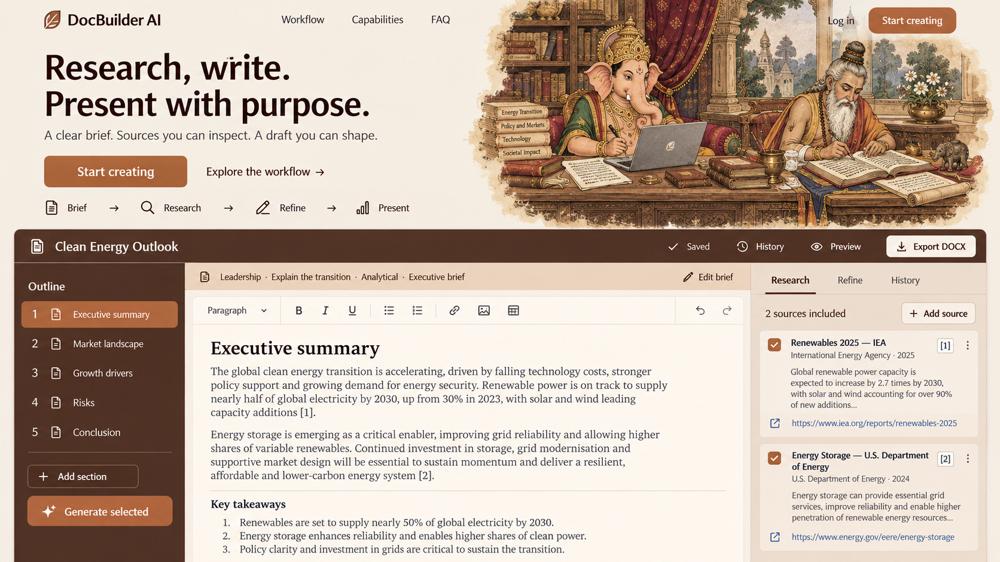

Review notes
Miniature-style Ganesha and Vyasa authorship scene, auburn chrome, copper selection and clay source rail. Broad lower-half application and compact hero. Sample citations, dates and forecast prose require replacement with grounded fixtures before implementation.